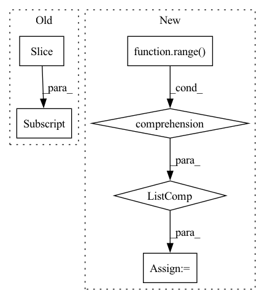

Pattern ID :22983
Before Change
import matplotlib.pyplot as plt
cols, rows = get_plot_cols_rows(len(images), rows)
images = images[: rows * cols]
// print(">>>> rows:", rows, ", cols:", cols, ", total:", len(images))
if texts is not None:
images = [put_text_on_image(imm, itt) for imm, itt in zip(images, texts)] + list(images[len(texts) :])After Change
cols, rows = get_plot_cols_rows(len(images), rows, ceil_mode=True)
if cols * rows > len(images):
padded = cols * rows - len(images)
images += [np.zeros_like(images[-1]) + 255 for ii in range(padded)]
// images = images[: rows * cols]
// print(">>>> rows:", rows, ", cols:", cols, ", total:", len(images))
if texts is not None:In pattern: SUPERPATTERN
Frequency: 3
Non-data size: 6
Instances Fragment ID: 72968186
Project Name: leondgarse/keras_cv_attention_models
Commit Name: f501ed8f105fc5eebf9fa5224cf11f87f1ac77a0
Time: 2022-07-30
Author: leondgarse@gmail.com
File Name: keras_cv_attention_models/visualizing/visualizing.py
M Class Name: AnonimousClass
N Class Name: AnonimousClass
M Method Name: stack_and_plot_images(7)
N Method Name: stack_and_plot_images(7)
M Parent Class:
N Parent Class:
M File Name: keras_cv_attention_models/visualizing/visualizing.py
N File Name: keras_cv_attention_models/visualizing/visualizing.py
M Start Line: 87
M End Line: 87
N Start Line: 87
N End Line: 93
Before Change
n_samples = len(df) - n_lags + 1 - n_forecasts
time = df.loc[:, "t"].iloc[n_lags-1:-n_forecasts] .values
// time = pd.DataFrame(time)
time = np.expand_dims(time, axis=1)
After Change
// time is the time at each forecast step
t = df.loc[:, "t"].values
time = np.array([t[n_lags+i: n_lags+i+n_forecasts] for i in range(n_samples)] )
// if time were to be the present time at forecasting
// time = df.loc[:, "t"].iloc[n_lags-1:-n_forecasts].values Fragment ID: 72968176
Project Name: ourownstory/neural_prophet
Commit Name: 384f1803a758d07de17db9631d9941c4d7a65de3
Time: 2020-05-19
Author: oskar.triebe@merantix.com
File Name: code/make_dataset.py
M Class Name: AnonimousClass
N Class Name: AnonimousClass
M Method Name: tabularize_univariate_datetime(4)
N Method Name: tabularize_univariate_datetime(5)
M Parent Class:
N Parent Class:
M File Name: code/make_dataset.py
N File Name: code/make_dataset.py
M Start Line: 125
M End Line: 176
N Start Line: 152
N End Line: 184
Before Change
devices = jax.local_device_count()
for k, v in params.items():
if v.shape[0] > devices:
params[k] = v[devices * jax.process_index():devices * (jax.process_index() + 1)]
if not ctx.parameters:
for key, param in params.items():
if key in ctx.parameters:After Change
pid = jax.process_index()
with multiprocessing.pool.ThreadPool(ctx.dims.heads) as p:
start = time.time()
paths = [f"{ctx.training.checkpoint_load_path}/{i}_" for i in range(devices * pid, devices * (pid + 1))]
shards = list(p.imap(read_shard, paths))
print(f"read from disk/gcs in {time.time() - start:.06}s")
unsharded = [] Fragment ID: 72968183
Project Name: homebrewnlp/homebrewnlp-jax
Commit Name: 2c20ea47994c09fc78d60b48af99b7af913a682b
Time: 2022-09-04
Author: 39779310+ClashLuke@users.noreply.github.com
File Name: src/utils/checkpoint.py
M Class Name: AnonimousClass
N Class Name: AnonimousClass
M Method Name: read_ckpt(2)
N Method Name: read_ckpt(2)
M Parent Class:
N Parent Class:
M File Name: src/utils/checkpoint.py
N File Name: src/utils/checkpoint.py
M Start Line: 116
M End Line: 139
N Start Line: 114
N End Line: 135